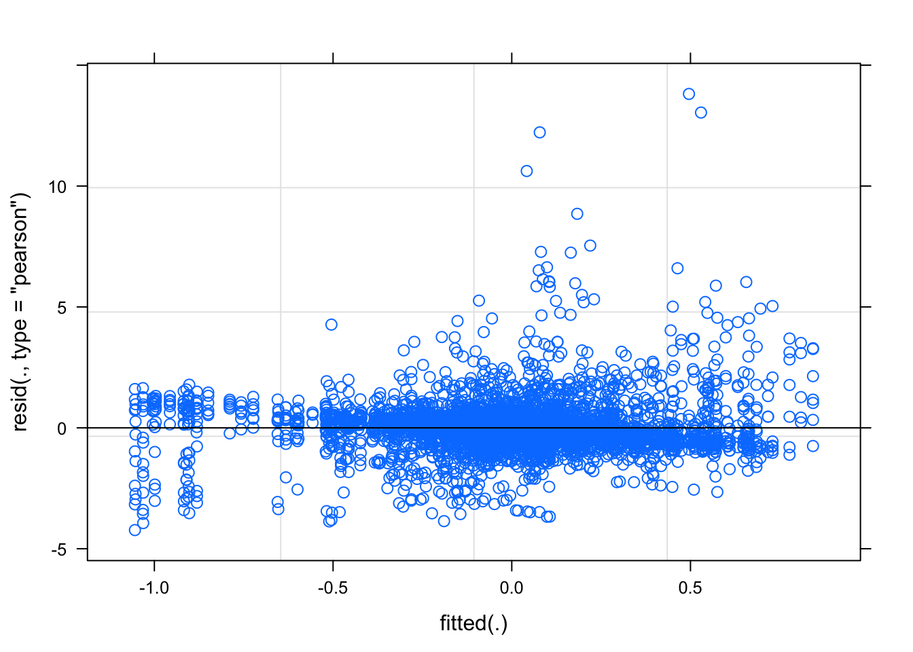
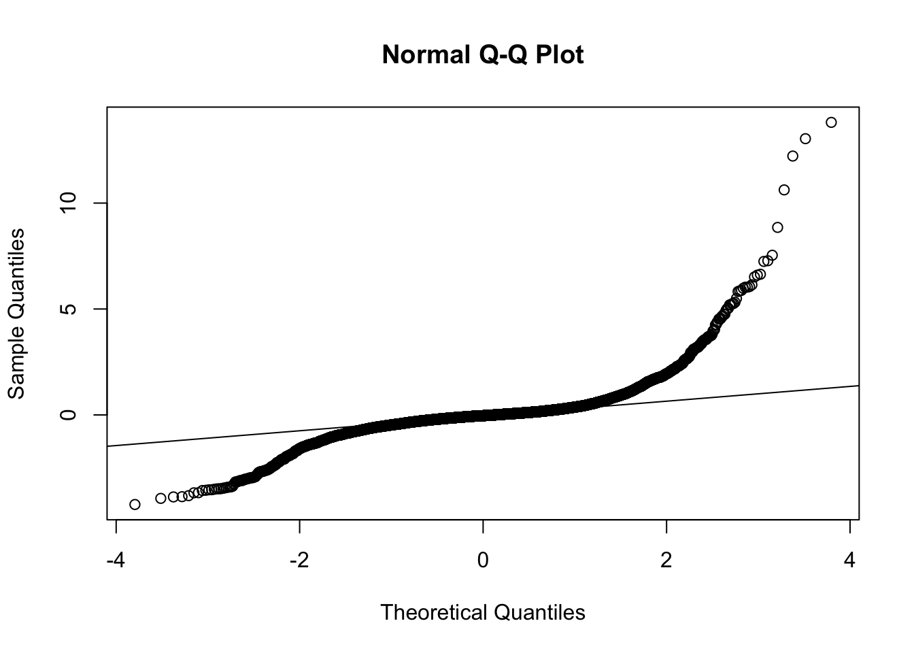
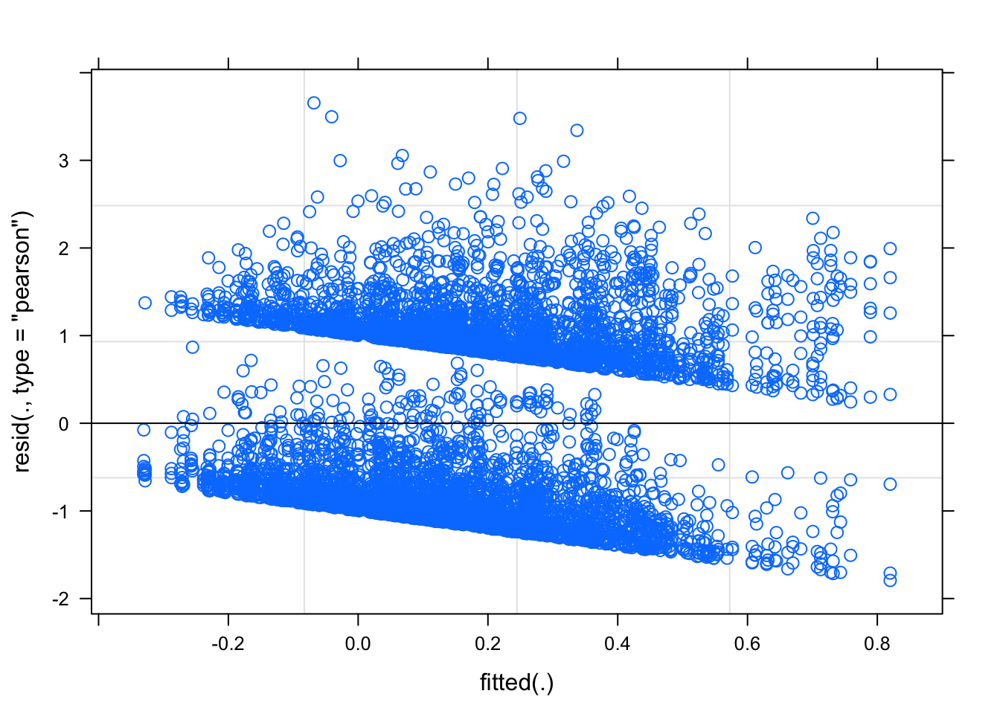
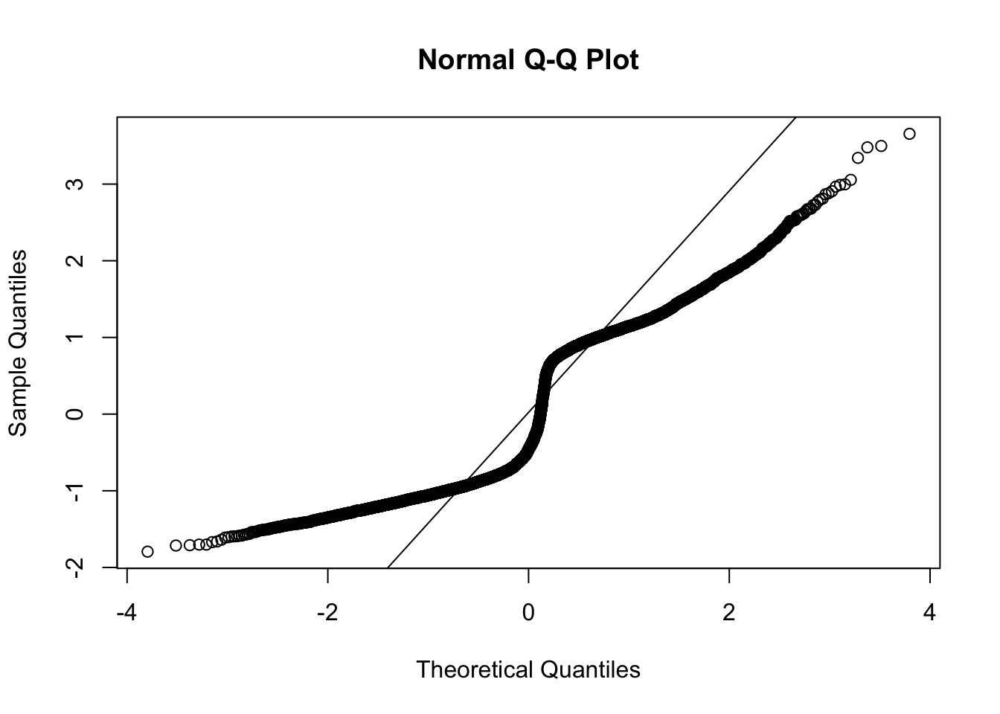
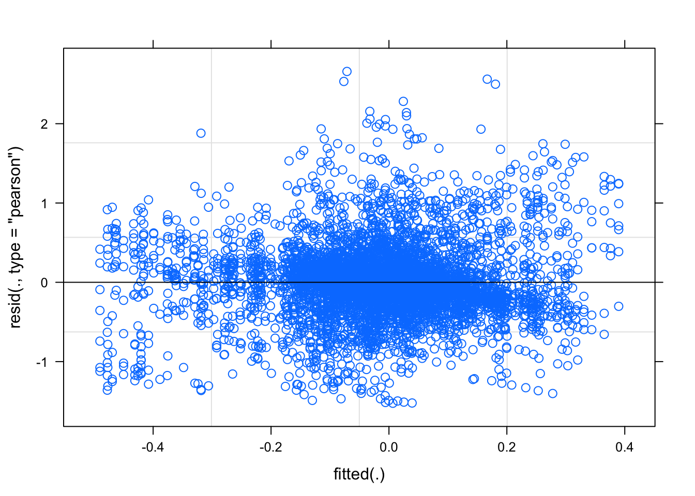
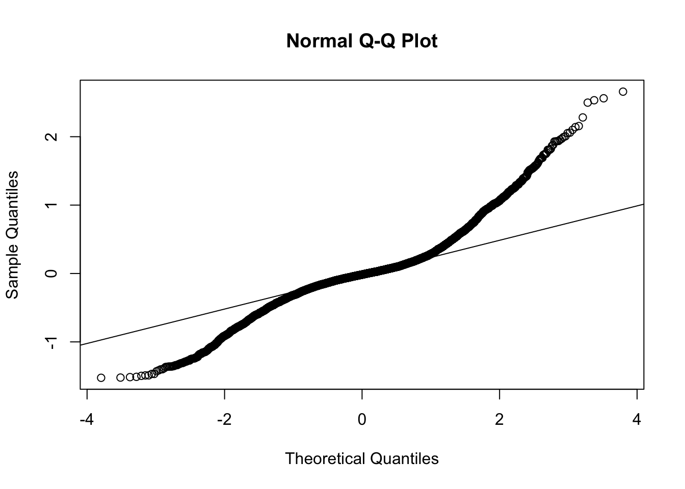

Last updated: 2020-09-12
Checks: 6 1
Knit directory: RILEY_Hons/
This reproducible R Markdown analysis was created with workflowr (version 1.6.2). The Checks tab describes the reproducibility checks that were applied when the results were created. The Past versions tab lists the development history.
The R Markdown is untracked by Git. To know which version of the R Markdown file created these results, you’ll want to first commit it to the Git repo. If you’re still working on the analysis, you can ignore this warning. When you’re finished, you can run wflow_publish to commit the R Markdown file and build the HTML.
Great job! The global environment was empty. Objects defined in the global environment can affect the analysis in your R Markdown file in unknown ways. For reproduciblity it’s best to always run the code in an empty environment.
The command set.seed(20200903) was run prior to running the code in the R Markdown file. Setting a seed ensures that any results that rely on randomness, e.g. subsampling or permutations, are reproducible.
Great job! Recording the operating system, R version, and package versions is critical for reproducibility.
Nice! There were no cached chunks for this analysis, so you can be confident that you successfully produced the results during this run.
Great job! Using relative paths to the files within your workflowr project makes it easier to run your code on other machines.
Great! You are using Git for version control. Tracking code development and connecting the code version to the results is critical for reproducibility.
The results in this page were generated with repository version a258016. See the Past versions tab to see a history of the changes made to the R Markdown and HTML files.
Note that you need to be careful to ensure that all relevant files for the analysis have been committed to Git prior to generating the results (you can use wflow_publish or wflow_git_commit). workflowr only checks the R Markdown file, but you know if there are other scripts or data files that it depends on. Below is the status of the Git repository when the results were generated:
Ignored files:
Ignored: .Rhistory
Ignored: .Rproj.user/
Ignored: analysis/child_bar_plot.png
Ignored: analysis/child_cheek_plot.png
Ignored: analysis/child_cheekbin_plot.png
Untracked files:
Untracked: analysis/11_plotting_cheek.Rmd
Untracked: analysis/12_plotting_brow.Rmd
Untracked: analysis/13_adult_child_analysis.Rmd
Untracked: analysis/14_plotting_adult_child.Rmd
Untracked: analysis/testing_zscore.Rmd
Untracked: child_bar_plot.png
Untracked: child_cheek_plot.png
Untracked: data/adult_child_combined/zdiff_binscreened2.csv
Unstaged changes:
Modified: analysis/10_brow_analysis.Rmd
Modified: analysis/4_clean_baseline.Rmd
Modified: analysis/5_calculating_zscores.Rmd
Modified: analysis/6_bin_outliers.Rmd
Modified: analysis/7_plotting.Rmd
Modified: analysis/8_analysing.Rmd
Modified: analysis/9_cheek_analysis.Rmd
Note that any generated files, e.g. HTML, png, CSS, etc., are not included in this status report because it is ok for generated content to have uncommitted changes.
There are no past versions. Publish this analysis with wflow_publish() to start tracking its development.
library(tidyverse)
library(here)
library(lme4)
library(lmerTest)
library(broom.mixed)
library(pixiedust)
library(beepr)
library(ggplot2) df <- read_csv(here::here("data", "adult_child_combined", "zdiff_binscreened2.csv"))Parsed with column specification:
cols(
pp_no = col_character(),
model = col_character(),
emotion = col_double(),
trial = col_character(),
muscle = col_character(),
bin = col_character(),
zdiff = col_double(),
emo = col_character()
)The emotion variable below is numbers so not sure how the emotion %in% c(happy, angry) was working. Add emo variable with emotion labels
df$emotion <- as.factor(df$emotion)
levels(df$emotion)[1] "121" "131" "232" "323" "424" "434" "525" "535"df <- df %>%
mutate(emo = case_when(emotion == 121 ~ "happy",
emotion == 323 ~ "angry",
emotion == 424 ~ "fear",
emotion == 525 ~ "sad",
emotion == 131 ~ "happy",
emotion == 232 ~ "angry",
emotion == 434 ~ "fear",
emotion == 535 ~ "sad"))
df <- df %>% mutate_if(is.character, as.factor)
glimpse(df)Rows: 61,480
Columns: 8
$ pp_no <fct> pp401, pp401, pp401, pp401, pp401, pp401, pp401, pp401, pp401…
$ model <fct> adult, adult, adult, adult, adult, adult, adult, adult, adult…
$ emotion <fct> 131, 131, 131, 131, 131, 131, 131, 131, 131, 131, 131, 131, 1…
$ trial <fct> trial1, trial1, trial1, trial1, trial1, trial1, trial1, trial…
$ muscle <fct> brow, brow, brow, brow, brow, brow, brow, brow, brow, brow, c…
$ bin <fct> diff_bin1, diff_bin10, diff_bin2, diff_bin3, diff_bin4, diff_…
$ zdiff <dbl> 0.133992486, -0.672344142, 0.034300886, -0.126145600, -0.1985…
$ emo <fct> happy, happy, happy, happy, happy, happy, happy, happy, happy…just happy/angry face for cheek
Happy_cheek <- df %>%
filter(emo == "happy") %>%
filter(muscle == "cheek") %>%
arrange(pp_no, model, trial, bin)This is the model structure we will use to check assumptions. Include all predicted fixed effects and simplest random effect structure (just intercepts for participant). In all likelihood this model with zscores as DV will not meet assumptions and we will need to transform data.
cheek_emoZ <- lmer(zdiff ~ bin + model + model*bin + (1|pp_no), data = Happy_cheek, REML = FALSE)plot(cheek_emoZ)
qqnorm(resid(cheek_emoZ))
qqline(resid(cheek_emoZ))
As suscepted, need to transform to correct normality.
NOTE: this first log mod calc is WRONG, uses + instead of *
Happy_cheek <- Happy_cheek %>%
mutate(log_modulus = sign(zdiff) + log(1+abs(zdiff)))cheek_happy_log <- lmer(log_modulus ~ bin + model + bin*model + (1|pp_no), data = Happy_cheek, REML = FALSE)plot(cheek_happy_log)
qqnorm(resid(cheek_happy_log))
qqline(resid(cheek_happy_log))
WHAT that looks WAY worse…. what is going on here…
Is that log_mod doing what we think?? How to log modulus here…. https://blogs.sas.com/content/iml/2014/07/14/log-transformation-of-pos-neg.html
RILEY- it is * log not +
Happy_cheek <- Happy_cheek %>%
mutate(log_modulus_new = sign(zdiff) * log(1+abs(zdiff)))cheek_happy_log_new <- lmer(log_modulus_new ~ bin + model + model*bin + (1|pp_no), data = Happy_cheek, REML = FALSE)plot(cheek_happy_log_new)
qqnorm(resid(cheek_happy_log_new))
qqline(resid(cheek_happy_log_new))
Better but not great.
JENNY CODE CHECK UP TO HERE
What would the model fit look like if we built it from the ground up, adding each main effect then interaction with intercepts for particiapnt and slopes for main effects.
levels(Happy_cheek$emo)[1] "angry" "fear" "happy" "sad" just main effect of bin
cheek_bin <- lmer(log_modulus_new ~ bin + (1|pp_no), data = Happy_cheek, REML = FALSE)
beep(1)just main effect of model and bin
cheek_model_bin <- lmer(log_modulus_new ~ model + bin + (1|pp_no), data = Happy_cheek, REML = FALSE)
beep(2)main effect of model and bin, and slope for model (slope for bin doesnt converge)
cheek_model_bin_slope <- lmer(log_modulus_new ~ bin + model + (1 + model|pp_no), data = Happy_cheek, REML = FALSE)
beep(3)main effect of emotion, bin, model and emotion*bin interaction, slope for emotion
cheek_bin_model_inter <- lmer(log_modulus_new ~ bin + model + model*bin + (1 + model|pp_no), data = Happy_cheek, REML = FALSE)
beep(4)AIC(cheek_bin)[1] 8020.13AIC(cheek_model_bin)[1] 8001.935AIC(cheek_model_bin_slope)[1] 7753.839AIC(cheek_bin_model_inter)[1] 7767.78anova(cheek_bin, cheek_model_bin)Data: Happy_cheek
Models:
cheek_bin: log_modulus_new ~ bin + (1 | pp_no)
cheek_model_bin: log_modulus_new ~ model + bin + (1 | pp_no)
npar AIC BIC logLik deviance Chisq Df Pr(>Chisq)
cheek_bin 12 8020.1 8102.0 -3998.1 7996.1
cheek_model_bin 13 8001.9 8090.6 -3988.0 7975.9 20.195 1 6.995e-06 ***
---
Signif. codes: 0 '***' 0.001 '**' 0.01 '*' 0.05 '.' 0.1 ' ' 1anova(cheek_model_bin, cheek_model_bin_slope)Data: Happy_cheek
Models:
cheek_model_bin: log_modulus_new ~ model + bin + (1 | pp_no)
cheek_model_bin_slope: log_modulus_new ~ bin + model + (1 + model | pp_no)
npar AIC BIC logLik deviance Chisq Df Pr(>Chisq)
cheek_model_bin 13 8001.9 8090.6 -3988.0 7975.9
cheek_model_bin_slope 15 7753.8 7856.2 -3861.9 7723.8 252.1 2 < 2.2e-16
cheek_model_bin
cheek_model_bin_slope ***
---
Signif. codes: 0 '***' 0.001 '**' 0.01 '*' 0.05 '.' 0.1 ' ' 1anova(cheek_model_bin_slope, cheek_bin_model_inter)Data: Happy_cheek
Models:
cheek_model_bin_slope: log_modulus_new ~ bin + model + (1 + model | pp_no)
cheek_bin_model_inter: log_modulus_new ~ bin + model + model * bin + (1 + model | pp_no)
npar AIC BIC logLik deviance Chisq Df Pr(>Chisq)
cheek_model_bin_slope 15 7753.8 7856.2 -3861.9 7723.8
cheek_bin_model_inter 24 7767.8 7931.5 -3859.9 7719.8 4.0586 9 0.9075anova(cheek_bin_model_inter)Type III Analysis of Variance Table with Satterthwaite's method
Sum Sq Mean Sq NumDF DenDF F value Pr(>F)
bin 9.1172 1.01302 9 6692.1 5.7402 5.642e-08 ***
model 0.4883 0.48826 1 49.6 2.7667 0.1025
bin:model 0.7165 0.07961 9 6692.1 0.4511 0.9074
---
Signif. codes: 0 '***' 0.001 '**' 0.01 '*' 0.05 '.' 0.1 ' ' 1#get confidence intervals
confint.merMod(cheek_bin_model_inter, level = 0.95)Computing profile confidence intervals ... 2.5 % 97.5 %
.sig01 0.104547159 0.16469223
.sig02 -0.624905889 -0.10274630
.sig03 0.155561459 0.24406566
.sigma 0.413072964 0.42731033
(Intercept) -0.081651251 0.03429507
bindiff_bin10 0.026701510 0.15468520
bindiff_bin2 -0.094688173 0.03131820
bindiff_bin3 -0.093109854 0.03308174
bindiff_bin4 -0.045907429 0.08038406
bindiff_bin5 -0.043899962 0.08264839
bindiff_bin6 -0.027957115 0.09860023
bindiff_bin7 -0.003084041 0.12292817
bindiff_bin8 0.014861029 0.14178395
bindiff_bin9 0.038791460 0.16581764
modelchild -0.122300208 0.04582461
bindiff_bin10:modelchild -0.129173848 0.05216768
bindiff_bin2:modelchild -0.079202906 0.09991155
bindiff_bin3:modelchild -0.066111967 0.11300671
bindiff_bin4:modelchild -0.116495379 0.06288317
bindiff_bin5:modelchild -0.088385676 0.09098080
bindiff_bin6:modelchild -0.084618445 0.09489133
bindiff_bin7:modelchild -0.104567499 0.07422307
bindiff_bin8:modelchild -0.119525107 0.06044085
bindiff_bin9:modelchild -0.127617975 0.05291520really_nice_table <- dust(cheek_bin_model_inter) %>%
sprinkle(col = 4:7, round = 3, pad = 15, halign = "center", valign = "middle") %>%
sprinkle(col = 8, fn = quote(pvalString(value)), halign = "center", valign = "middle") %>%
sprinkle_colnames(term = "Term",
estimate = "Estimate",
std.error = "SE",
statistic = "t statistic",
p.value = "P-value") %>%
sprinkle(bg_pattern_by = "rows") %>%
sprinkle_print_method("html")
really_nice_table| effect | group | Term | Estimate | SE | t statistic | df | P-value |
|---|---|---|---|---|---|---|---|
| fixed | NA | (Intercept) | -0.024 | 0.029 | -0.803 | 243.865 | 0.42 |
| fixed | NA | bindiff_bin10 | 0.091 | 0.033 | 2.778 | 6693.069 | 0.005 |
| fixed | NA | bindiff_bin2 | -0.032 | 0.032 | -0.986 | 6692.143 | 0.32 |
| fixed | NA | bindiff_bin3 | -0.03 | 0.032 | -0.932 | 6692.446 | 0.35 |
| fixed | NA | bindiff_bin4 | 0.017 | 0.032 | 0.535 | 6692.823 | 0.59 |
| fixed | NA | bindiff_bin5 | 0.019 | 0.032 | 0.6 | 6692.381 | 0.55 |
| fixed | NA | bindiff_bin6 | 0.035 | 0.032 | 1.094 | 6692.685 | 0.27 |
| fixed | NA | bindiff_bin7 | 0.06 | 0.032 | 1.864 | 6692.328 | 0.062 |
| fixed | NA | bindiff_bin8 | 0.078 | 0.032 | 2.419 | 6692.656 | 0.016 |
| fixed | NA | bindiff_bin9 | 0.102 | 0.032 | 3.157 | 6693.019 | 0.002 |
| fixed | NA | modelchild | -0.038 | 0.043 | -0.895 | 218.532 | 0.37 |
| fixed | NA | bindiff_bin10:modelchild | -0.039 | 0.046 | -0.832 | 6692.633 | 0.41 |
| fixed | NA | bindiff_bin2:modelchild | 0.01 | 0.046 | 0.227 | 6691.974 | 0.82 |
| fixed | NA | bindiff_bin3:modelchild | 0.023 | 0.046 | 0.513 | 6692.214 | 0.61 |
| fixed | NA | bindiff_bin4:modelchild | -0.027 | 0.046 | -0.586 | 6692.311 | 0.56 |
| fixed | NA | bindiff_bin5:modelchild | 0.001 | 0.046 | 0.028 | 6692.123 | 0.98 |
| fixed | NA | bindiff_bin6:modelchild | 0.005 | 0.046 | 0.112 | 6692.369 | 0.91 |
| fixed | NA | bindiff_bin7:modelchild | -0.015 | 0.046 | -0.333 | 6692.027 | 0.74 |
| fixed | NA | bindiff_bin8:modelchild | -0.03 | 0.046 | -0.644 | 6692.393 | 0.52 |
| fixed | NA | bindiff_bin9:modelchild | -0.037 | 0.046 | -0.811 | 6692.687 | 0.42 |
| ran_pars | pp_no | sd__(Intercept) | 0.13 | NA | NA | NA | NA |
| ran_pars | pp_no | cor__(Intercept).modelchild | -0.396 | NA | NA | NA | NA |
| ran_pars | pp_no | sd__modelchild | 0.193 | NA | NA | NA | NA |
| ran_pars | Residual | sd__Observation | 0.42 | NA | NA | NA | NA |
sessionInfo()R version 3.6.2 (2019-12-12)
Platform: x86_64-apple-darwin15.6.0 (64-bit)
Running under: macOS High Sierra 10.13.6
Matrix products: default
BLAS: /Library/Frameworks/R.framework/Versions/3.6/Resources/lib/libRblas.0.dylib
LAPACK: /Library/Frameworks/R.framework/Versions/3.6/Resources/lib/libRlapack.dylib
locale:
[1] en_AU.UTF-8/en_AU.UTF-8/en_AU.UTF-8/C/en_AU.UTF-8/en_AU.UTF-8
attached base packages:
[1] stats graphics grDevices utils datasets methods base
other attached packages:
[1] beepr_1.3 pixiedust_0.9.0 broom.mixed_0.2.6 lmerTest_3.1-2
[5] lme4_1.1-23 Matrix_1.2-18 here_0.1 forcats_0.4.0
[9] stringr_1.4.0 dplyr_1.0.0 purrr_0.3.4 readr_1.3.1
[13] tidyr_1.1.0 tibble_3.0.3 ggplot2_3.2.1 tidyverse_1.3.0
loaded via a namespace (and not attached):
[1] httr_1.4.1 jsonlite_1.7.0 splines_3.6.2
[4] modelr_0.1.5 assertthat_0.2.1 statmod_1.4.34
[7] cellranger_1.1.0 yaml_2.2.1 numDeriv_2016.8-1.1
[10] pillar_1.4.6 backports_1.1.8 lattice_0.20-38
[13] glue_1.4.1 digest_0.6.25 checkmate_2.0.0
[16] promises_1.1.0 rvest_0.3.5 minqa_1.2.4
[19] colorspace_1.4-1 htmltools_0.5.0 httpuv_1.5.2
[22] plyr_1.8.5 pkgconfig_2.0.3 broom_0.7.0.9001
[25] haven_2.2.0 scales_1.1.0 later_1.0.0
[28] git2r_0.27.1 generics_0.0.2 ellipsis_0.3.1
[31] withr_2.1.2 TMB_1.7.18 lazyeval_0.2.2
[34] cli_2.0.2 magrittr_1.5 crayon_1.3.4
[37] readxl_1.3.1 evaluate_0.14 fs_1.3.1
[40] fansi_0.4.1 nlme_3.1-142 MASS_7.3-51.4
[43] xml2_1.2.2 tools_3.6.2 hms_0.5.3
[46] lifecycle_0.2.0 munsell_0.5.0 reprex_0.3.0
[49] compiler_3.6.2 rlang_0.4.7 grid_3.6.2
[52] nloptr_1.2.2.2 rstudioapi_0.11 rmarkdown_2.3
[55] boot_1.3-23 gtable_0.3.0 DBI_1.1.0
[58] reshape2_1.4.3 R6_2.4.1 lubridate_1.7.4
[61] knitr_1.29 utf8_1.1.4 workflowr_1.6.2
[64] rprojroot_1.3-2 stringi_1.4.6 Rcpp_1.0.5
[67] vctrs_0.3.1 audio_0.1-7 dbplyr_1.4.2
[70] tidyselect_1.1.0 xfun_0.15 coda_0.19-3